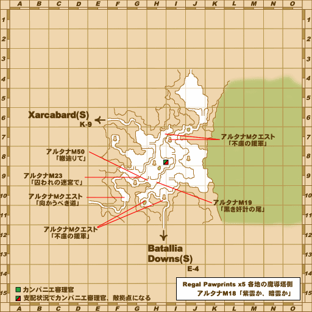

Before you begin
- Complete A Hawk in Repose.
Starting point
Zone entrance · Xarcabard [S]
Walkthrough
- Enter Xarcabard [S] from Beaucedine Glacier [S] for a scene.
- Examine Rally Point: Red at (F-8) to receive the operation briefing.
Battle and progress notes
- The pinned core has an incomplete main-story battle at mission 14; later story handlers do not establish that this chapter is currently reachable on Zenith.
Completion and reward
Story progression.
Area maps
Open a zone below, then select a map to enlarge it. Match the named floors and grid coordinates in the steps; these are reference area maps, not a live position tracker.
Xarcabard (S)

Beaucedine Glacier (S)


Xarcabard


Zone guides
References
Steps are an original summary of the linked walkthrough and reviewed source. Other servers’ bonus rewards are not included. How to read requirements, waits and battlefield notes.